认识钢笔工具
SECTION 01钢笔工具（Pen Tool）是 Photoshop 中最强大、最精准的选择与绘制工具。它通过绘制贝塞尔曲线路径，能够创建任意形状的轮廓，是电商图片处理中商品抠图、图形设计的核心工具。
在电商工作中，我们需要对商品图片进行抠图换背景、制作促销海报、设计商品主图等。钢笔工具比魔棒工具、套索工具更精准，能处理边缘复杂的商品，如衣物褶皱、产品轮廓等。
🎯 钢笔工具能做什么？
- ✅精准抠图 — 对商品、人物、产品进行精确抠取
- ✅绘制形状 — 创建自定义图形、标签、装饰元素
- ✅创建选区 — 将路径转换为精确选区
- ✅文字路径 — 制作沿路径排列的艺术文字
- ✅矢量图形 — 绘制可无限缩放的矢量形状
👍 钢笔工具的优势
- 路径可随时修改调整
- 边缘精细，无锯齿
- 适合复杂轮廓商品
- 可重复使用路径
👎 使用误区注意
- 不适合毛发等超细节边缘
- 需要一定练习才能熟练
- 大量直线时效率低于磁性套索
- 初学者容易忘记闭合路径
钢笔工具组详解
SECTION 02在 Photoshop 左侧工具栏中，长按钢笔图标可以展开钢笔工具组，共包含以下子工具：
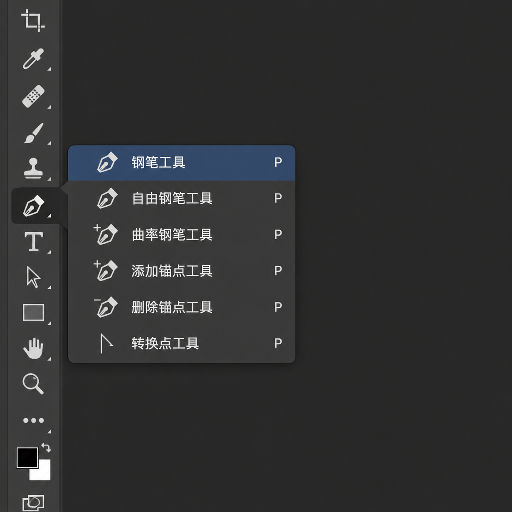
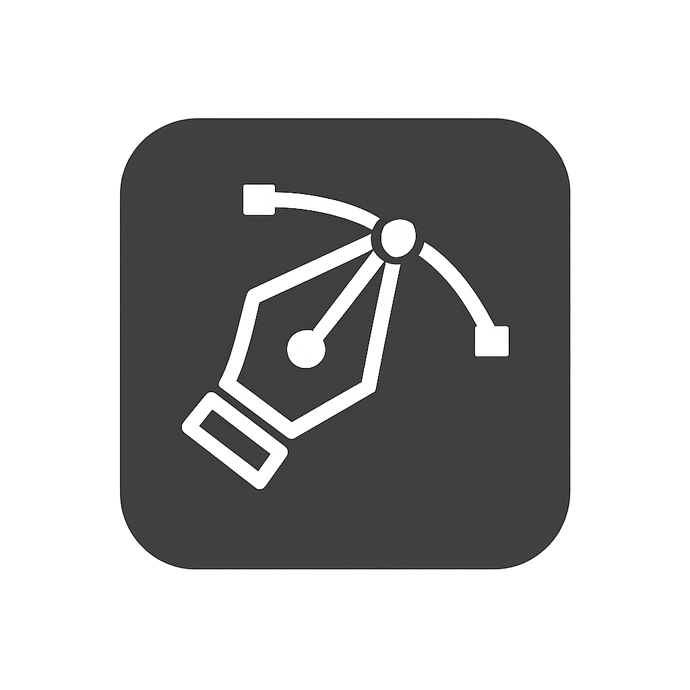
钢笔工具
绘制直线和曲线路径，最基础的路径创建工具
P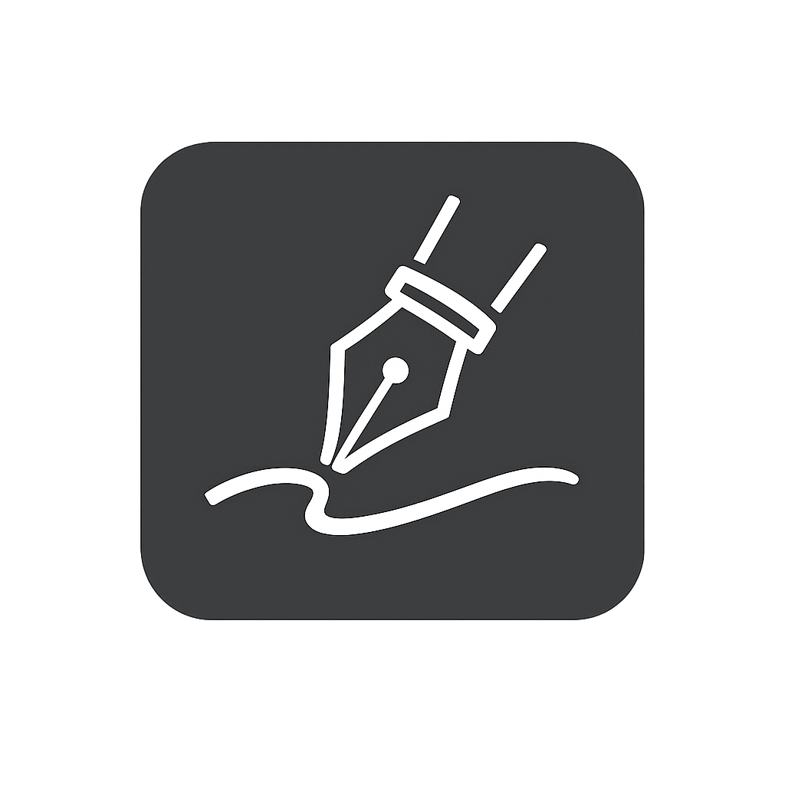
自由钢笔工具
像铅笔一样手绘路径，适合自由造型
P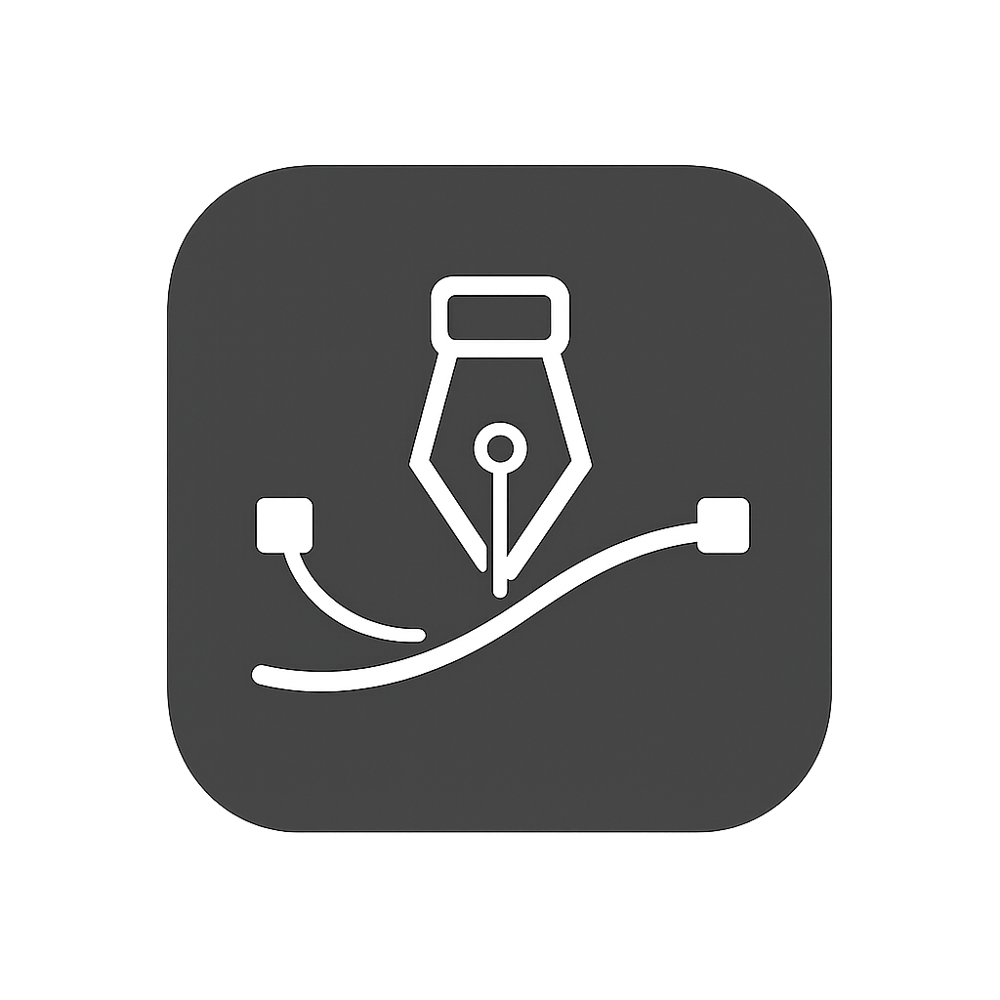
曲率钢笔工具
智能生成平滑曲线，新手友好，PS CC新增
P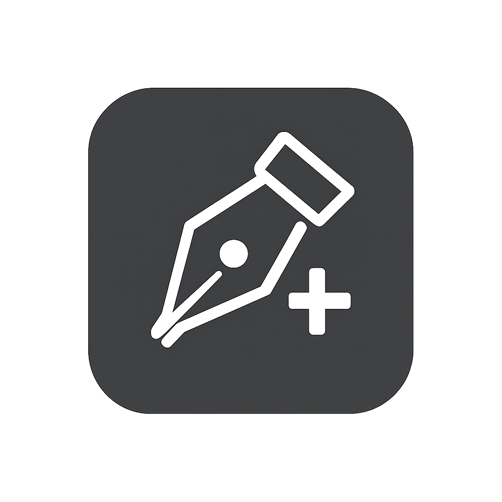
添加锚点工具
在已有路径上增加新的控制锚点
+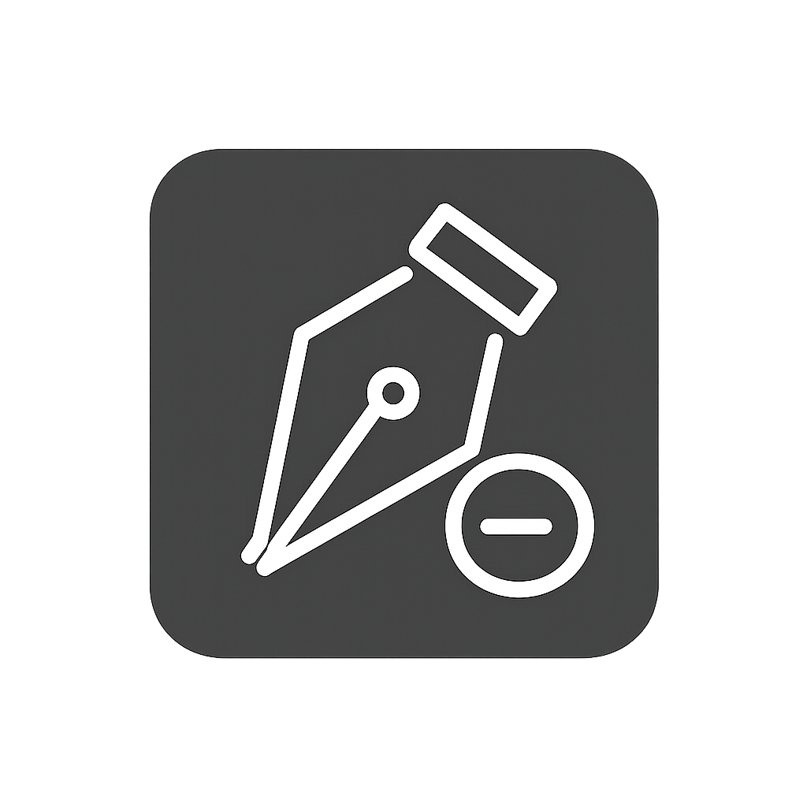
删除锚点工具
删除路径上多余的锚点使路径更简洁
-转换点工具
在角点和平滑点之间切换转换
Shift+C选择钢笔工具后，顶部选项栏会出现重要设置。在使用前，请先确认工具模式为「路径」或「形状」，而不是「像素」。
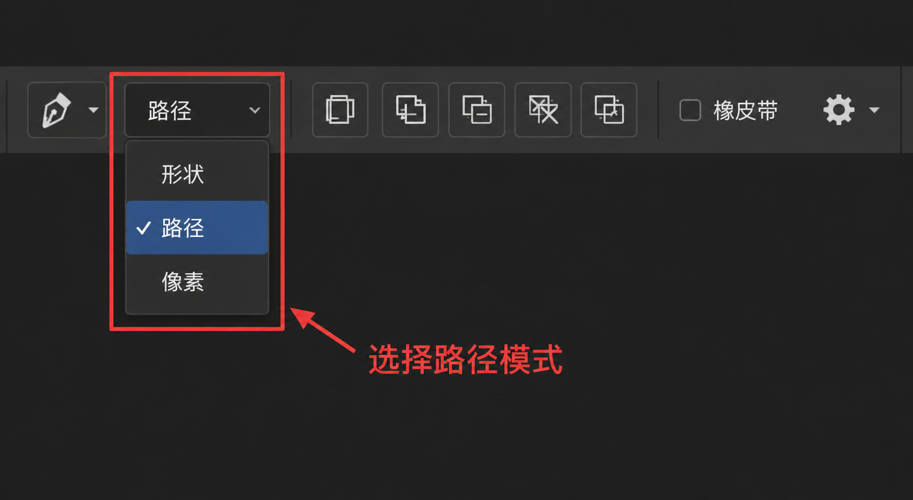
基础操作原理
SECTION 03🔑 三个核心概念
锚点（Anchor Point）
路径上的控制节点，分为角点（产生直线）和平滑点（产生曲线）
路径（Path）
由锚点连接而成的线段，可以是开放路径或封闭路径，本身不可打印
方向控制柄
平滑锚点两侧伸出的控制手柄，拖拽控制柄决定曲线的弯曲方向和幅度
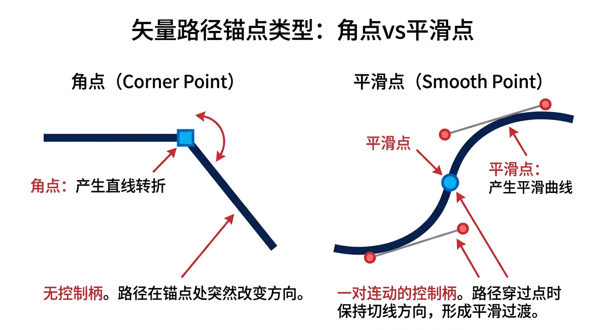
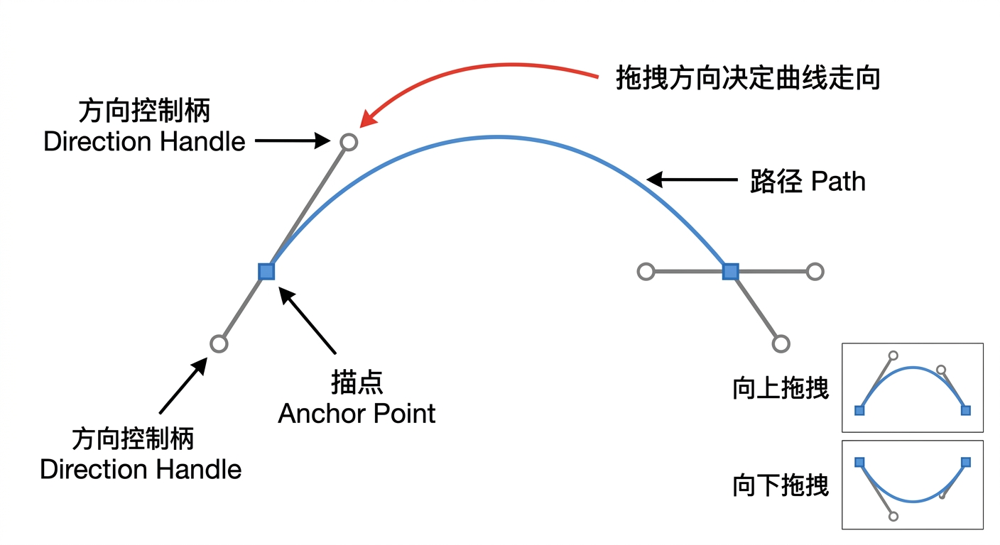
📖 绘制直线 vs 绘制曲线
-
选择钢笔工具，设置模式为「路径」
按 P 快速激活钢笔工具，确认顶部选项栏模式为「路径」
-
单击确定第一个锚点
在画布上单击（不要拖拽），放置第一个角点锚点
-
继续单击添加锚点
每次单击都会创建角点，形成直线路径段。按住 Shift 可约束为45°倍数方向
-
闭合路径
将光标移回第一个锚点，出现小圆圈图标时单击即可闭合路径
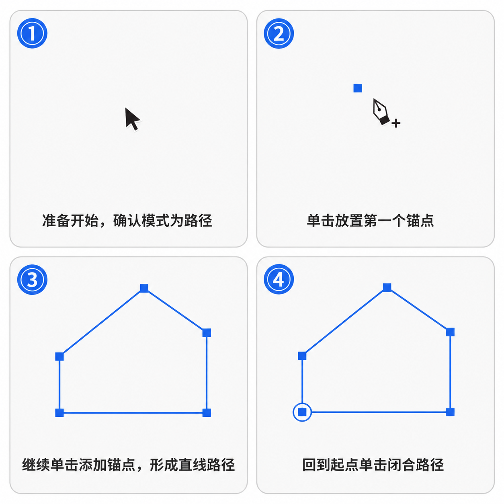
-
选择钢笔工具
按 P 激活工具，模式选「路径」
-
单击并拖拽创建平滑点
按住鼠标不松开并拖拽，即可创建带有方向控制柄的平滑锚点
-
拖拽控制柄调整曲线方向
拖拽时，控制柄的方向和长度决定曲线走向。上拖控制柄，曲线向上弯；下拖则向下弯
-
继续添加平滑锚点形成曲线
每次单击并拖拽，Photoshop 会自动生成连接两点的平滑曲线
-
闭合路径
回到起点单击（或单击并拖拽）闭合路径
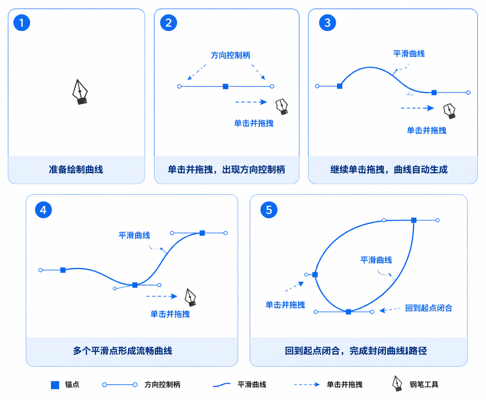
绘制过程中误点了多余锚点怎么办？立即按 Ctrl+Z 撤销最后一步。想删除最近一个锚点，可以直接按 Delete 键。
用钢笔工具绘制形状
SECTION 04在电商设计中，钢笔工具常被用于绘制自定义形状，例如价格标签、促销气泡、装饰箭头等。将顶部选项栏切换为「形状」模式即可直接创建带填充的矢量形状。
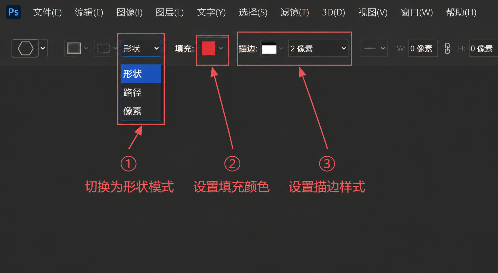
🎯 实操：绘制一个促销标签形状
新建图层
选钢笔
切形状模式
设置填充色
绘制路径
闭合
调整描边
样式
-
新建空白图层
在图层面板点击「+」新建图层，防止操作影响原图
-
选择钢笔，切换「形状」模式
顶部选项栏选择「形状」，设置填充色（如红色）、描边（白色2px）
-
绘制五边形标签轮廓
依次单击绘制角点，顶部中间点略向上，模拟价格标签形状
-
闭合路径，形状自动填充
回到起点单击闭合，Photoshop 自动填充设定的颜色
-
用文字工具添加促销文字
切换文字工具，在形状上方输入价格或促销语
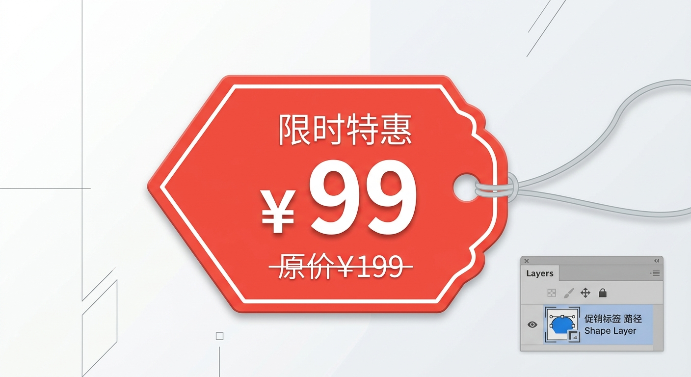
已经用「路径」模式绘制好的路径，可在图层面板中找到形状图层，或通过编辑 → 填充路径的方式进行颜色填充，非常灵活！
精准抠图实战
SECTION 05钢笔抠图是电商图像处理中最常用的技能之一。以下以电商商品（手机）抠图为例，完整演示抠图全流程。
① 将图片放大到 100%~200% 以便精准描边；② 在图层面板复制一个原图备份；③ 将钢笔工具模式设为「路径」（不是形状）
📱 实战：手机商品图抠图步骤
-
放大图像，找到商品边缘起点
使用 Ctrl++ 放大到150%左右，找到商品边缘的清晰位置作为起点。建议从直线段较多的角落开始。
 ▲ 放大图像后可清晰看到商品轮廓边缘
▲ 放大图像后可清晰看到商品轮廓边缘 -
沿轮廓逐段创建锚点
直线段位置：单击创建角点；弯曲位置：单击并拖拽创建平滑点。注意锚点不要离边缘太远，保持紧贴商品轮廓。
 ▲ 沿手机边缘逐步添加锚点，曲线位置拖拽控制柄
▲ 沿手机边缘逐步添加锚点，曲线位置拖拽控制柄 -
曲线段处理技巧
遇到手机圆角时，提前在弯曲前适当位置放一个锚点，然后拖拽控制柄让曲线贴合圆角。若控制柄方向不对，可按住 Alt 单独调整一侧控制柄。
 ▲ 使用 Alt 键单独调整控制柄，处理商品圆角
▲ 使用 Alt 键单独调整控制柄，处理商品圆角 -
闭合路径
围绕商品一圈后，将光标移回第一个锚点，看到小圆圈标志时单击闭合路径。
-
将路径转换为选区
方法一：在路径面板底部点击「将路径作为选区载入」按钮
方法二：快捷键 Ctrl+Enter 直接将当前路径转为选区 ▲ 路径转为选区后，商品轮廓出现蚂蚁线
▲ 路径转为选区后，商品轮廓出现蚂蚁线 -
羽化处理（可选）
若需要边缘更柔和，在「选择 → 修改 → 羽化」中设置0.5~1px的羽化值，使边缘过渡自然。
-
反选并删除背景 / 添加蒙版
方法A（删除法）：Ctrl+Shift+I 反选背景 → Delete 删除
方法B（蒙版法，推荐）：不反选，直接点图层面板「添加蒙版」按钮，无损保留原图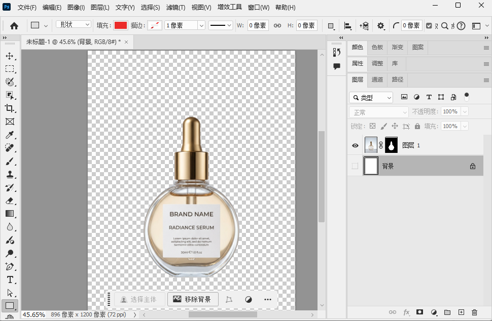
▲ 抠图完成！背景已去除，商品轮廓干净清晰
删除背景会破坏原始像素，无法还原。使用图层蒙版方式可随时修改、恢复，是专业设计师的标准做法！
路径编辑进阶技巧
SECTION 06绘制完路径后，往往需要反复调整才能达到最精准的效果。掌握路径编辑技巧可以大幅提升工作效率。
🛠️ 配合使用路径选择工具
路径选择工具（黑箭头）
选择并移动整条路径
A直接选择工具（白箭头）
选择并移动单个锚点或调整控制柄
A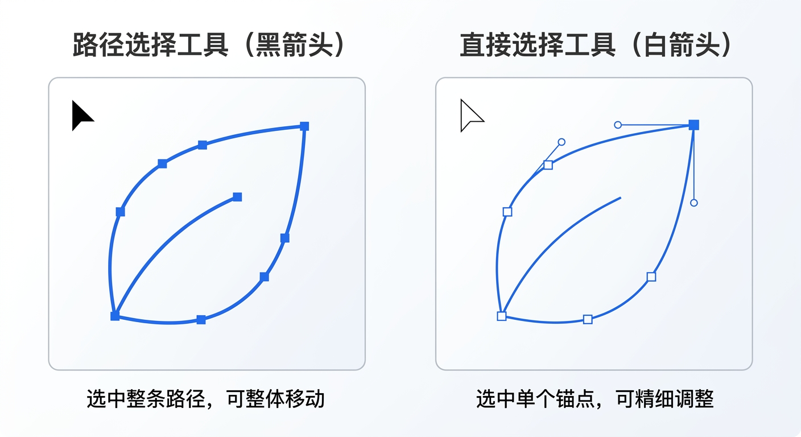
⚡ 高效编辑快捷操作
-
绘制中临时切换白箭头
按住 Ctrl 临时变为直接选择工具，调整锚点后松开继续绘制 -
单独调整曲线一侧控制柄
按住 Alt 拖拽控制柄，可只移动单侧，不影响另一侧 -
平滑点转为角点
用转换点工具（或按住 Alt）直接点击平滑锚点即可转换 -
路径转选区
Ctrl+Enter 直接将当前工作路径转为选区
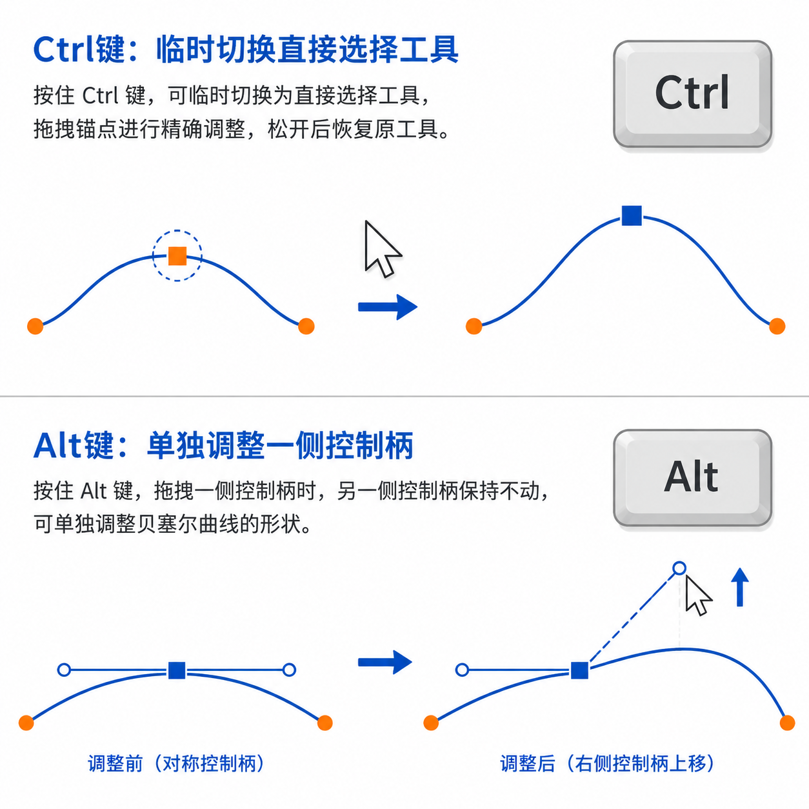
完成路径后，在窗口 → 路径面板中可以保存路径（双击工作路径重命名）、载入选区、描边路径等。保存路径后关闭文件重新打开依然存在！

快捷键速查表
SECTION 07熟记常用快捷键，可以让钢笔工具的使用效率提升数倍！以下是最重要的快捷键汇总：
| 操作 | Windows 快捷键 | Mac 快捷键 | 说明 |
|---|---|---|---|
| 激活钢笔工具 | P | P | 直接切换到钢笔工具 |
| 切换钢笔子工具 | Shift+P | Shift+P | 在钢笔工具组内循环切换 |
| 临时切换白箭头 | Ctrl 按住 | ⌘ 按住 | 绘制中临时调整锚点 |
| 单独调整控制柄 | Alt 拖拽 | Option 拖拽 | 只移动一侧控制柄 |
| 约束45°方向 | Shift+单击 | Shift+单击 | 绘制水平/垂直/45°线段 |
| 路径转选区 | Ctrl+Enter | ⌘+Enter | 快速将路径载入为选区 |
| 反选选区 | Ctrl+Shift+I | ⌘+Shift+I | 反转选区（用于删除背景） |
| 取消选区 | Ctrl+D | ⌘+D | 取消当前选区 |
| 撤销操作 | Ctrl+Z | ⌘+Z | 撤销最近一步操作 |
| 撤销多步 | Ctrl+Alt+Z | ⌘+Option+Z | 连续向前撤销多步 |
| 放大视图 | Ctrl++ | ⌘++ | 放大画面便于精准操作 |
| 缩小视图 | Ctrl+- | ⌘+- | 缩小查看整体效果 |
| 适合屏幕 | Ctrl+0 | ⌘+0 | 恢复到适合窗口的大小 |
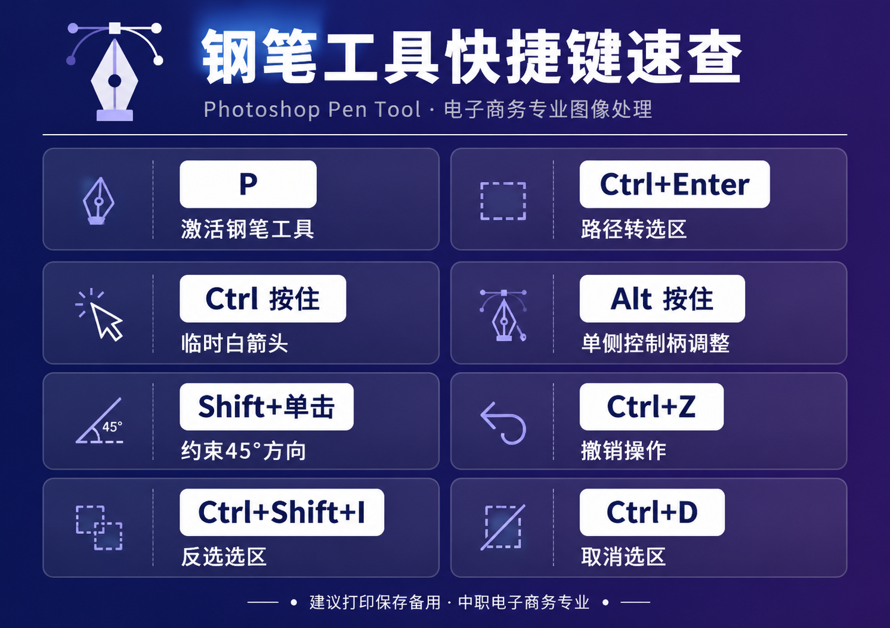
课堂练习与作业
SECTION 08📌 基础练习题（必做）
- 使用钢笔工具在新建画布上分别绘制：一条直线路径、一条S形曲线路径，并截图保存。
- 用钢笔工具的「形状」模式，绘制一个六边形电商价格标签，填充红色，白色描边2px。
- 打开老师提供的商品素材图（见img/practice-product.jpg），使用钢笔工具进行商品抠图，保存为PNG透明背景文件。
🚀 提高练习题（选做）
- 将抠好的商品放在新背景图上，调整大小与位置，制作一张简单的电商主图。
- 使用钢笔工具绘制一个促销活动的装饰箭头形状，并为其添加图层样式（渐变+投影）。
- 尝试使用「自由钢笔工具」绘制一个手写风格的装饰线条，对比与普通钢笔工具的区别。

① 将完成的 PSD 文件和最终 PNG 文件提交；② 文件命名：班级-姓名-钢笔练习.psd；③ 截图记录操作过程（至少3张）一并提交
本节知识总结
钢笔工具组
6个子工具各司其职，普通钢笔是核心
锚点与路径
单击=角点直线，拖拽=平滑点曲线
形状模式
切换到形状模式可直接填色绘制矢量图形
抠图流程
描边路径→闭合→Ctrl+Enter转选区→蒙版
辅助快捷键
Ctrl临时白箭头，Alt单侧控制柄
专业习惯
用蒙版不用删除，保留原始像素